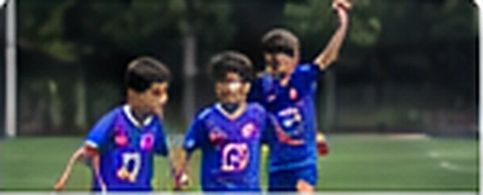
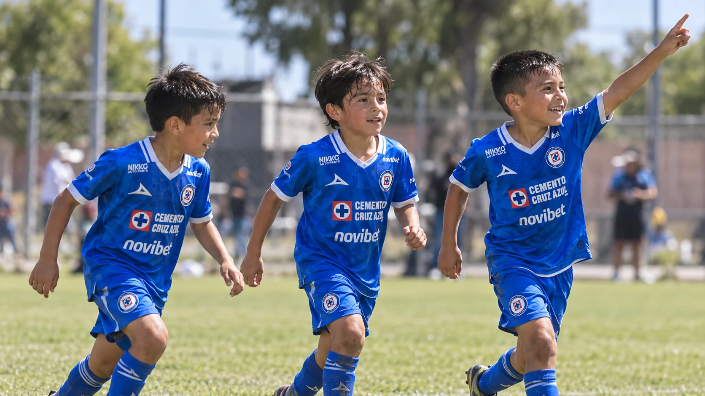
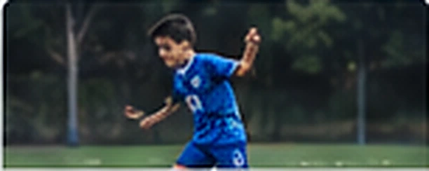
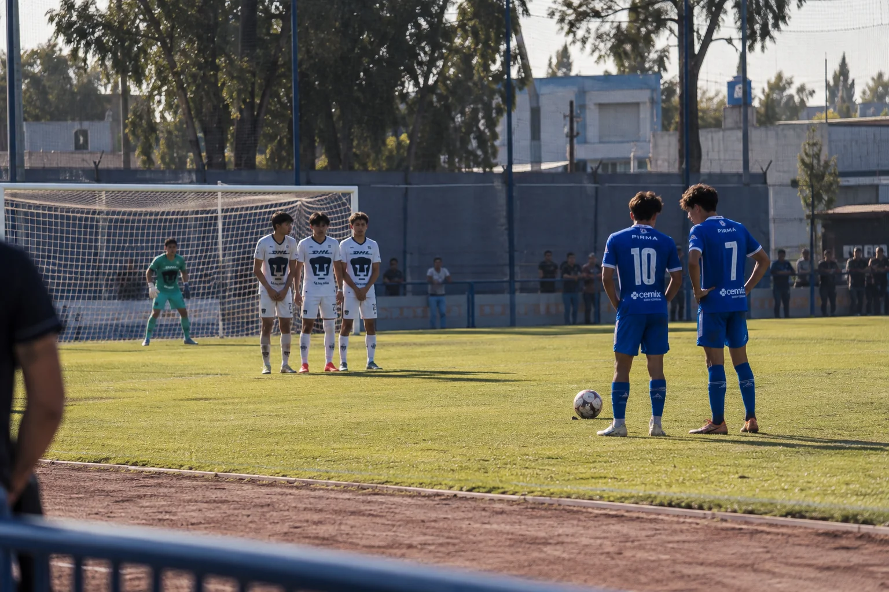

De los primeros toques a nuevos retos
CATEGORÍAS
Una experiencia de fútbol para disfrutar y crecer en cada etapa.

Bambinis4–6 años

Menores7–9 años

Infantiles10–12 años

Juveniles13–16 años
Los rangos y nombres se tomaron del boceto ilustrativo. Deben validarse con la academia antes de publicar.
Formación que acompaña cada etapa
Juego y alegría
Buscamos que la experiencia sea positiva y que los alumnos se diviertan.
Trabajo en equipo
Pasar el balón también es aprender a colaborar y respetar.
Aprendizaje constante
Cada etapa ofrece nuevas oportunidades para descubrir y mejorar.